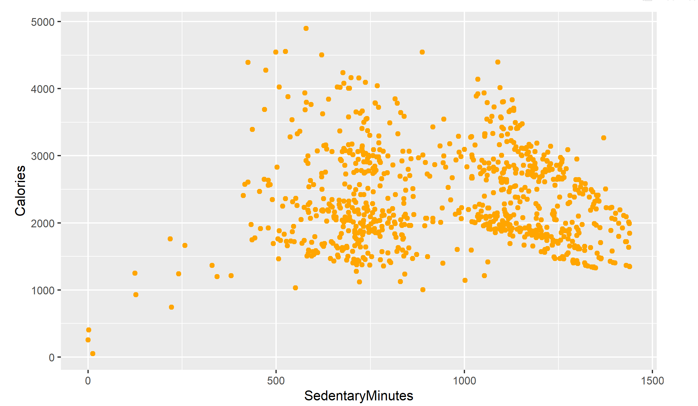

BellaBeat Fitness
A Case Study
Smart devices are a big part of people’s everyday life. As a smart device manufacturer,
Bellabeat can benefit from learning the trend of smart device usage and
make data-driven business strategies to explore opportunities for growth.

Key Questions
1. What are some trends in smart device usage?
2. How could these trends apply to Bellabeat customers?
3. How could these trends help influence Bellabeat marketing strategy?.
Data Preparation and Processing
The data set to be used is a public data set available through Kaggle and contains personal fitness tracker from thirty fitbit users. The data set includes 18 csv files that capture everything from daily activity, calories (daily, hourly and by minute), intensities (daily, hourly and by minute), number of steps (daily, hourly and by minute), heart rate, minute METs, sleep (Day and minute) and weight log info. For the scope of this data analysis only a selection of the 18 data sets that were deemed relevant in addressing the business task were imported into RStudio.
BELLABEAT BIG QUERY INPUTS
Using the Google BigQuery platform, I selected the required data for analysis and this can be seen using the link below.
1. There is a relationship between activity level and calories burnt.
2. There is a relationship between activity level and sleep time.
3. There is a relationship between activity level and weight.
In order to find out the relation and validate the hypothesis, four queries have been constructed to aggregate the data for analysis.
Data vizualization on the three components
1. Activity level and calories burnt relation

From the above chart we can see that a person who has higher active minutes tends to burn more calories in a day,
the more time they spend inactive, the lower calories they tend to burn in a day.